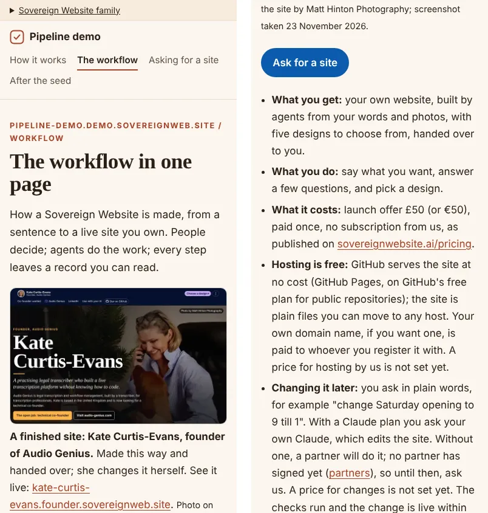

Synthetic users: the pipeline demo's workflow page, round 4
Page: https://pipeline-demo.demo.sovereignweb.site/workflow/ at f747933 (v0.1.10). Run: 23 November 2026, about 16:28 UTC, by design.b.rounds. Would you want one? 2 of 5 (rounds 1 to 3: 2 of 5). Look 3.6 (4, 4, 3, 3, 4). Nobody said "wow". The review.
The same method and personas as round 1. These are simulations, and never replace the measured checks or a real person.
| Persona | Want one? | Look | In their words |
|---|---|---|---|
| Startup founder, no site | yes | 4 | "The Kate Curtis-Evans site looks like a real founder page, not a template, and 'Made this way and handed over; she changes it herself' is exactly what I want." |
| Team lead, renting from a website builder | no | 4 | "we edit our site every week, and the page says 'A price for changes is not set yet' and 'no partner has signed yet' ... I can't move a team onto something where the ongoing cost and who does the edits are still open." |
| Self-employed, no site | no | 3 | "if I haven't got a Claude plan, 'no partner has signed yet', so who changes my opening hours? The £50 is tempting, but the page reads as if it's written for people who build these things." |
| Low-vision reader | yes | 3 | "'every site is checked for accessibility before it goes live' matters to me. The words inside the Kate screenshot are unreadable at phone size." |
| Sceptical friend | no | 4 | "'A price for hosting by us is not set yet', 'A price for changes is not set yet', 'no partner has signed yet'. And the worked example is the team making a site for itself." |
What changed
- Kate's site, now near the top, is the first pull to yes. The founder named it first.
- The Car Buyer story now ends live: "from a sentence to a live site in under three hours".
- All three noes now quote the page's own honest gaps: "A price for changes is not set yet", "no partner has signed yet", "A price for hosting by us is not set yet". The page can no longer close these with words. They need decisions: a price for changes, and a partner, or a stated "we do small changes for you" offer.
